Im Programmfenster "CRM Fallansicht", welches aus verschiedenen CRM-Programmpunkten bzw. CRM-Auswertungen aufgerufen werden kann, werden alle Schritte zum jeweiligen Workflow bzw. Aktionsschritt angezeigt.
Hinweis
Die Anzeige von Workflows ist von der Berechtigung des angemeldeten Benutzers abhängig.
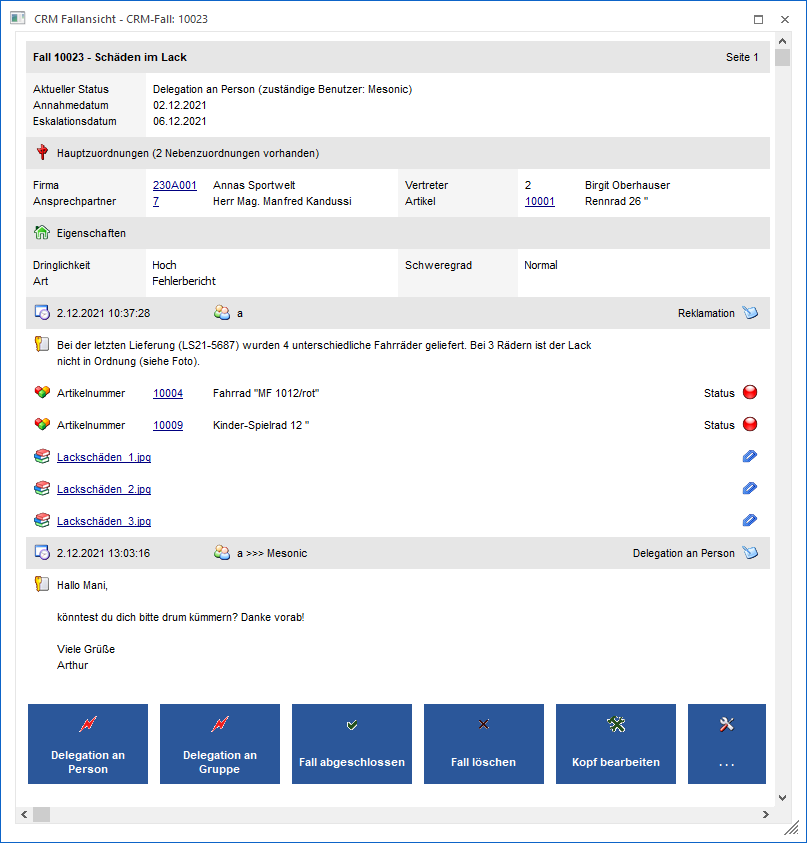
Die CRM-Fallansicht ist in 3 Bereiche unterteilt:
ü Kopf
ü Mitte
ü Fuß (nur bei CRM Workflows)
Kopf
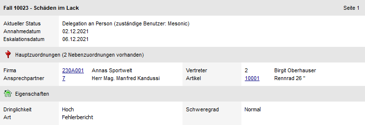
Im Bereich des "Kopfs" werden alle Hauptinformationen zur Verfügung gestellt. Das Ändern von diesen Daten ist über die Bearbeitung der CRM Aktion bzw. des CRM Workflows möglich (Button "Bearbeiten").
Hinweis
Wenn das Eskalationsdatum kleiner dem aktuellen Tagesdatum (Systemdatum) ist, dann erscheint folgende Meldung in der Ansicht:
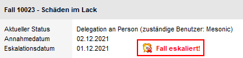
Mitte
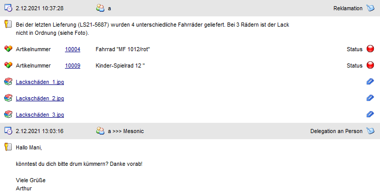
Im Bereich der "Mitte" werden die weiteren Daten der Aktion bzw. die einzelnen Workflowschritte angezeigt.
Ø Langbeschreibung intern
An dieser Stelle wird der Text des Eingabefelds "Langbeschreibung intern" dargestellt.
Ø Langbeschreibung extern
An dieser Stelle wird der Text des Eingabefelds "Langbeschreibung extern" dargestellt.
Ø Upload
Bei Einträgen, die mit diesen Symbolen gekennzeichnet sind, handelt es sich um Uploads zu dem CRM-Fall. Über Anwahl des Icons per linker Maustaste wird das Upload in der "Archiv - Vorschau" angezeigt.
Hinweis
Über die Datenkombination linke Maustaste + SHIFT-Taste kann das Upload auf der Festplatte des Windows-Rechners abgespeichert werden.
Ø Calcsheet
Hierbei handelt es sich um eine Calcsheet (aus dem Programm MesoCalc). Durch die Anwahl des Symbols kann das Calcsheet zur Bearbeitung geöffnet werden.
Ø XRM-Bereich
Durch eine XRM-Tabelle können weitere Objekte zum CRM-Fall erfasst werden (sogenannte "Nebenzuordnungen"). Diese Informationen werden jeweils unter der "Langbeschreibung intern" bzw. "Langbeschreibung extern" dargestellt und können einen Status (rot, gelb oder grün) beinhalten. Folgende Objekte sind möglich:
ü Kontonummer
ü Kontaktnummer
ü Projektnummer
ü Artikelnummer
ü Vertreternummer
ü Kostenstelle
ü Kostenträger
ü Mitarbeiter
ü Benutzer
ü Benutzergruppe
ü Text (100 Zeichen)
Beispiel
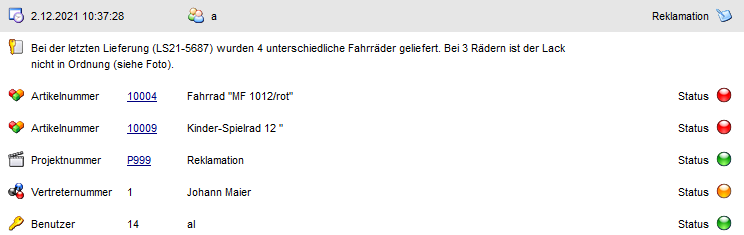
Hinweis
Im Kopf-Bereich wird auf Nebenzuordnungen hingewiesen.
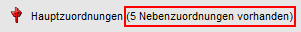
Ø Löschen
Dieses Symbol steht bei Uploads und Calcsheets zur Verfügung. Durch Anwahl wird das Upload bzw. das Calcsheet gelöscht.
Hinweis
Bei Workflows kann es über Fallrechte gesteuert werden, ob der Benutzer löschen darf.
Ø Bearbeiten
Durch Anwahl dieses Symbols kann der Workflowschritt bzw. die CRM-Aktion bearbeitet werden
Fuß (nur bei CRM Workflows)
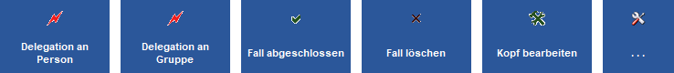
Im Bereich des "Fußes" werden die weiteren Schritte eines Workflows dargestellt. Die Reihenfolge setzt sich wie folgt zusammen:
ü 1. Favoriten des
Benutzers
Innerhalb der Favoriten wird nach der Anzahl der Verwendungen
absteigend (bezogen auf den aktuellen Benutzer) und der Bezeichnung der Schritte
aufsteigend sortiert.
ü 2. Zuletzt verwendete Schritte des
Benutzers
Innerhalb der zuletzt verwendete Schritte wird nach den Anzahl der
Verwendungen absteigend (bezogen auf den aktuellen Benutzer) und der Bezeichnung
der Schritte aufsteigend sortiert.
ü 3. Noch nicht aufgeführte Folge-
und Endschritte
Innerhalb der noch nicht aufgeführten Folge- und Endschritte
wird nach der Bezeichnung der Schritte und der Nummer sortiert.
ü 4. Noch nicht aufgeführte
Nebenschritte
Innerhalb der noch nicht aufgeführten Nebenschritte wird nach
der Bezeichnung der Schritte und der Nummer sortiert.
Gibt es mehr wie 5 Schritte, so wird eine Kachel mit ". . ." und dem Icon zur Verfügung gestellt. Durch einen Klick auf diese wird das Fenster "Neuer Schritt" geöffnet, in dem alle für diesen CRM-Fall möglichen Einträge ausgewählt werden können.
Buttons
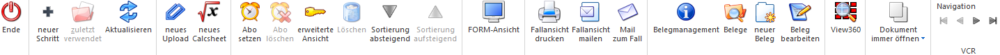
Ø Ende
Durch Anwahl des Buttons "Ende" bzw. der Taste ESC wird die CRM Fallansicht geschlossen.
Ø neuer Schritt (nur bei CRM Workflow)
Es wird das Programm "Neuer Schritt" geöffnet. An dieser Stelle steht die Funktionalität von "Neuer Fall" zur Verfügung, bezogen auf den aktuellen Workflow.
Ø zuletzt verwendet (nur bei CRM Workflow)
Bei Anwahl des Buttons werden die bei dem Workflow zuletzt verwendeten Schritte, über ein Drop Down-Menü, zur Auswahl angeboten
Ø Aktualisieren
Durch Anwahl des Buttons "Aktualisieren" wird die CRM Fallansicht neu aufgebaut. Von anderen Benutzern vorgenommene Änderungen sind somit direkt ersichtlich.
Ø neues Upload
Um ein Dokument einem Workflow oder einer Aktion hinzuzufügen, kann dieser Button angewählt werden. Hierdurch öffnet sich der Datei-Dialog in welchem die gewünschte Datei angegeben werden kann. Die hinzugefügte Datei wird in der Datenbank als Archiveintrag behandelt.
Hinweis
Ein Upload kann auch per Drag & Drop in die CRM Fallansicht vorgenommen werden.
Ø neues Calcsheet
Um ein Calcsheet von MesoCalc in die Fallansicht hinzuzufügen kann dieser Button gedrückt werden. Dadurch wird der Menüpunkt "MesoCalc" aufgerufen in dem das gewünschte Calcsheet gewählt werden kann.
Ø Abo setzen (nur bei CRM Workflow)
Wird diese Funktion angewählt, so wird für den Benutzer das Kennzeichen gesetzt, dass dieser den Fall abonniert hat (auch ersichtlich in der so genannten "erweiterten Ansicht").
Zum einen können diese abonnierten CRM-Fälle in Reports direkt ausgewertet werden und zusätzlich wir der Benutzer (je nach Einstellung im Workflow) über Änderungen im CRM-Fall direkt benachrichtigt.
Ø Abo löschen (nur bei CRM Workflow)
Wenn ein Abo gesetzt wurde, dann kann dieses mit Hilfe dieses Buttons wieder entfernt werden.
Ø erweiterte Ansicht (nur bei CRM Workflow)
Durch Anwahl des Buttons "Erweiterte Ansicht" werden weitere Informationen zu dem CRM-Fall angezeigt.
ü Fallrechte
Welcher Benutzer
bzw. welche Benutzergruppe darf wie auf den Fall zugreifen.
ü Fallansicht (internes Kennzeichen "V")
ü Uploadzugriff (internes Kennzeichen "U")
ü Downloadzugriff (internes Kennzeichen "D")
ü Berechtigungen verändern (internes Kennzeichen "R")
ü Neuen Schritt schreiben (internes Kennzeichen "S")
ü Fallabos
Welcher Benutzer hat
ein Abo auf den Fall gesetzt.
ü Verknüpfte Fälle
Wenn aus dem
CRM-Fall weitere CRM-Fälle abgesplittet wurden oder der Fall aus einem anderen
CRM-Fall stammt, dann werden an dieser Stelle der bzw. die CRM-Fälle
aufgelistet.
Hinweis
Diese Einstellung wird pro Benutzer individuell gespeichert, d.h. wenn die Fallansicht das nächste Mal geöffnet wird, wird wieder die erweiterte Ansicht dargestellt.
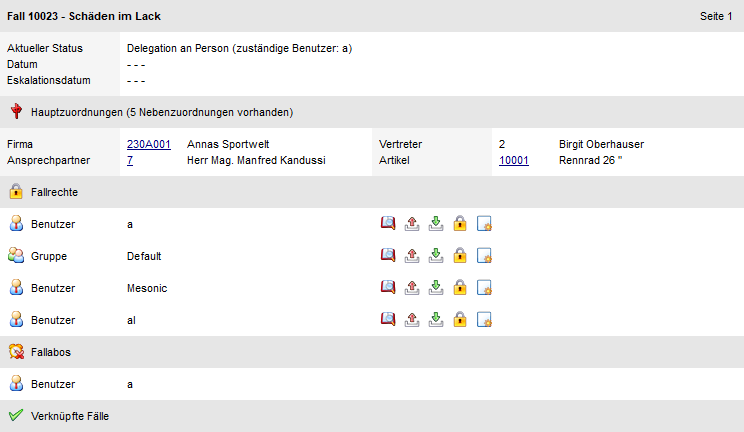
Ø Löschen (nur bei CRM Aktion)
Durch Anwählen des Löschen-Buttons wird der CRM-Fall gelöscht.
Ø Sortierung absteigend / Sortierung aufsteigen (nur bei CRM Workflow)
Die einzelnen Workflowschritte werden nach Erfassungsdatum auf- bzw. absteigend sortiert.
Ø FORM-Ansicht
Durch Anwahl dieses Buttons wird die Fallansicht in der sogenannten "FORM-Ansicht" dargestellt. Bei dieser Ansicht wird auf der rechten Seite der Bereich von MesoAI angezeigt:
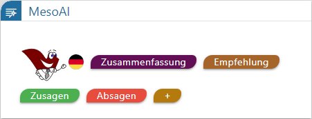
ü - Sprache
Mit Hilfe dieses Buttons kann
die Sprache gewählt werden, in welcher die Antwort erfolgen soll. Aktuell stehen
die Sprachen Deutsch, Englisch, Französich und Italienisch zur Auswahl.
ü
Durch Anwahl der Buttons wird der
CRM-Fall analysiert und eine entsprechende Antwort ausgegeben.
ü - eigene Frage
Wenn dieser Buttons
angeklickt wird, kann eine "freie" Frage gestellt werden.
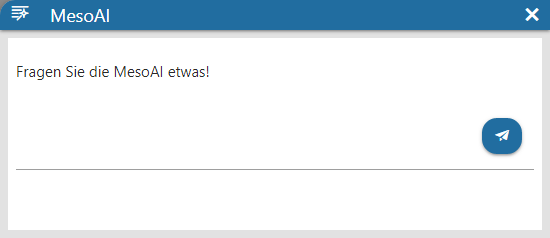
Hinweis
Es können nur Fragen in Bezug auf den geöffneten Fall gestellt werden. Fragen z.B. nach dem Wetter oder dergleichen werden entsprechend abgeleht.
ü - Zwischenablage
Soll die Antwort
weiterverarbeitet werden, so kann sie durch Anklicken dieses Buttons in die
Zwischenablage kopiert werden. Von dort aus kann sie dann z.B. in ein
gewünschtes Textfeld übernommen werden.
Ø Fallansicht drucken
Durch den Button "Fallansicht drucken" wird die Fallansicht auf den Drucker bzw. in den Spooler ausgegeben.
Ø Fallansicht mailen
Mit Hilfe dieses Buttons wird die CRM Fallansicht als Anhang in eine neue E-Mail übergeben.
Ø Mail zum Fall (nur bei CRM Workflow)
Durch Anwählen dieses Buttons wird ein neues Mail im Mailclient geöffnet, als Betreff die Fallnummer und im Text ein (EWL-)Link zum Fall eingefügt. Dazu muss im WinLine ADMIN (WEBEdition - CRM Kompakt) die "EWL-WWW-Adresse" angegeben sein.
Ø Belegmanagement
Wenn zu dem CRM-Fall bereits ein oder mehrere WinLine FAKT-Belege erfasst wurden, so kann mit Hilfe dieses Buttons das Belegmanagement geöffnet werden und die zugeordneten Belege werden direkt angezeigt
Ø Belege
Durch Anwahl des Buttons "Belege" wird das Programm "Belege" in der WinLine FAKT geöffnet. Hier erfolgt eine automatische Selektion auf die aktuelle Fallnummer.
Ø neuer Beleg
Durch Anwahl des Buttons "neuer Beleg" wird in die WinLine FAKT gewechselt und die Belegerfassung geöffnet. Der erfasste Beleg wird hierbei automatisch mit dem CRM-Fall verknüpft.
Ø Beleg bearbeiten
Wenn zu dem CRM-Fall bereits ein WinLine FAKT-Beleg erfasst wurde, so kann mit dem Button "Beleg bearbeiten" der Beleg direkt in der Belegerfassung geöffnet werden.
Ø View 360
Bei Anwahl dieses Buttons wird die View 360 gestartet, wobei der aktuelle CRM-Fall als Ausgangspunkt der Analyse dient.
Ø Dokumente anzeigen
Mit Hilfe dieser Auswahl kann definiert werden, ob Uploads zum CRM-Fall in der Dokumenten-Vorschau direkt angezeigt werden sollen. Folgende Möglichkeiten stehen dabei zur Verfügung:
ü Dokument einmalig öffnen
Die
Dokumenten-Vorschau wird bei der Anwahl dieser Option einmalig geöffnet.
ü Dokument immer öffnen
Die
Vorschau wird geöffnet und die Einstellung des Buttons benutzerspezifisch
gespeichert. Bei dem Aufruf des nächsten Falls wird somit die Vorschau direkt
angezeigt, sofern Uploads vorhanden sind.
ü Dokument nicht öffnen
Die
Vorschau wird geschlossen und die Einstellung des Buttons benutzerspezifisch
gespeichert. Bei dem Aufruf weiterer CRM-Fälle werden die Uploads somit nicht
direkt angezeigt.
Hinweis
Handelt es sich um einen CRM-Fall des BelegPro's, so steht zusätzlich folgende Optionen zur Verfügung:
ü BelegPro einmalig öffnen
Bei
Anwahl dieser Option wird einmalig das Fenster "Beleg Pro - Import" geöffnet und
die Import-Daten angezeigt.
ü BelegPro immer öffnen
Das
Fenster "Beleg Pro - Import" wird geöffnet, die Import-Daten angezeigt und die
Einstellung des Buttons benutzerspezifisch gespeichert. Bei dem Aufruf weiterer
CRM-Fälle des Beleg Pro´s werden Import-Daten somit direkt angezeigt.
Ø VCR-Buttons
Mit Hilfe dieser Buttons kann innerhalb eines CRM-Falls geblättert werden.